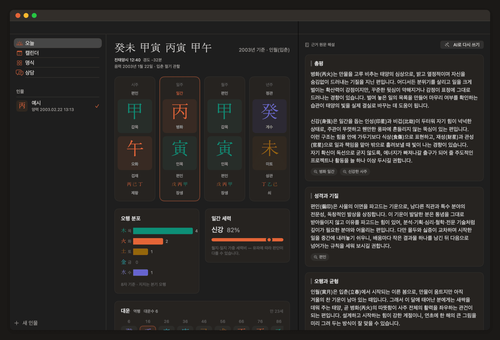
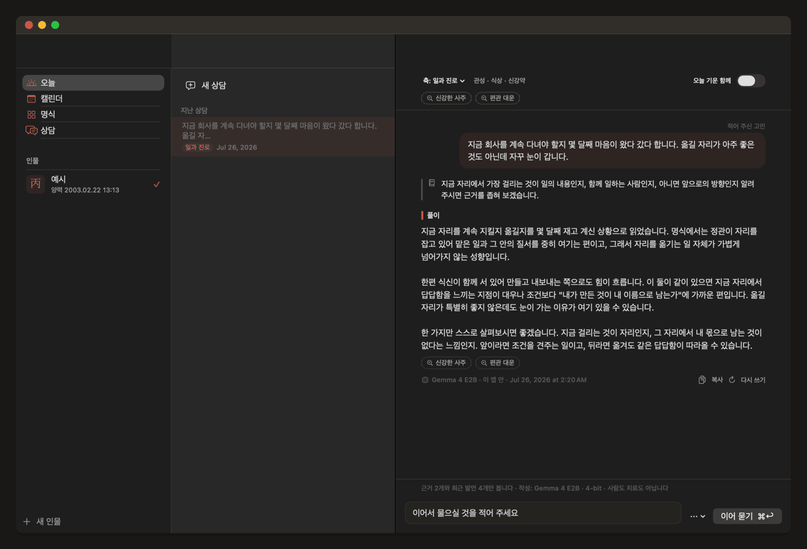
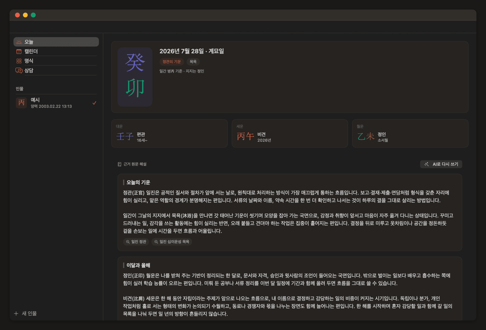

사주 명식을,근거와 함께.
절기와 진태양시를 이 Mac에서 직접 계산합니다. 모든 해석 문단에는 그것을 만든 명리 규칙의 원문이 붙습니다. 생년월일시는 이 Mac을 벗어나지 않습니다.
macOS 15 이상 · Apple Silicon 전용 · 계정 없음 · 결제 없음 · 변경 내역

이 앱이 다르게 하는 세 가지
더 정확히 말하면, 하지 않기로 한 세 가지입니다.
계산을 모델에게 맡기지 않습니다
태양 겉보기 황경을 VSOP87D 계열로 직접 계산해 절입 시각을 분 단위로 판정합니다. 진태양시, 한국의 역대 표준시, 서머타임(1948–1960, 1987–1988), UTC+8:30 시대까지 반영합니다. 적용된 보정이 화면에 항상 떠 있습니다.
모든 문단에 근거가 붙습니다
해석 규칙 108개를 태그로 정확히 매칭합니다. 문단마다 근거 칩이 붙고, 누르면 그 문장을 만든 규칙의 원문이 나옵니다. 임베딩 유사도를 쓰지 않으므로 어떤 문장이 어디서 나왔는지 항상 압니다.
날에 등급을 매기지 않습니다
좋은 날과 나쁜 날 대신 어떤 성격의 기운이 실리는 국면인지만 씁니다. 충(沖)은 나쁜 것이 아니라 움직임이 생기는 국면이기 때문입니다. 자료구조에 점수 필드가 아예 없습니다.
AI는 선택 사항입니다
모델이 없어도 이 앱은 완전합니다.
- 기준선이 항상 먼저 있습니다. 규칙 엔진이 근거 원문을 조립하므로 첫 실행에서 3.6GB를 요구하지 않습니다.
- AI 문장은 버튼을 누를 때만 만듭니다. 화면을 열거나 모델을 고르는 것으로 생성이 시작되지 않습니다.
- 상담은 고민을 명리 축으로 옮깁니다. 그 축의 근거만으로 풀이하고, 답변에 쓰인 근거가 표시됩니다.
- 어디서 쓸지 고르실 수 있습니다. 기본은 이 Mac의 모델이고, 네트워크는 그것을 내려받을 때만 씁니다. 원하시면 직접 지정한 OpenAI 호환 제공자에게 주문할 수도 있는데, 그 경우 무엇이 어디로 나가는지 처음 보내기 전에 원문으로 보여 드립니다.


명식은 한 번, 시간은 매일
명식은 평생 바뀌지 않으므로 한 번 보고 닫는 화면입니다. 그래서 시간 축을 두었습니다. 오늘 화면에서 일진과 대운·세운·월운을 보고, 월간 캘린더에서 충·삼합·일간합이 닿는 날을 봅니다. 메뉴바에서 앱을 열지 않고도 확인할 수 있습니다.
여기서도 길일과 흉일을 칠하지 않습니다. 한눈에 읽히는 재미는 줄지만, 색 하나로 하루를 판정하는 앱은 이미 많습니다.
설치
Homebrew — 권장
첫 실행 경고가 없습니다. cask가 격리 속성을 제거합니다.
brew install --cask waylake/tap/four-eight직접 내려받기
FourEight.zip을 받아
/Applications에 옮깁니다.
이 앱은 Apple 공증을 받지 않았습니다. 직접 내려받아 처음 열면 macOS가 이렇게 말합니다.
“‘FourEight’이(가) 손상되었기 때문에 열 수 없습니다. 휴지통으로 이동해야 합니다.”
손상된 것이 아닙니다. 공증되지 않은 앱에 브라우저가 붙인 격리 속성을 macOS가 거부하는 것입니다. 한 번 지우면 그다음부터는 정상적으로 열립니다.
xattr -dr com.apple.quarantine /Applications/FourEight.appmacOS 15부터 “우클릭 → 열기” 우회는 삭제되었습니다. 시스템 설정 → 개인정보 보호 및 보안에서 “그래도 열기”를 누르는 방법도 있지만, 그 버튼은 실행 실패 후 약 1시간만 보입니다. 위 명령이 확실합니다.
업데이트
앱이 스스로 확인하고, 설치는 사용자가 승인해야 합니다. 자동 설치 스위치는 만들지 않았습니다. 생년월일시를 다루는 앱이 사용자 모르게 바이너리를 갈아치우면 앞뒤가 맞지 않기 때문입니다. 만세력 계산 규칙이 바뀌는 릴리스는 따로 표시해 설치 후 한 번 알립니다.
유파가 갈리는 지점은 설정으로 드러냅니다
만세력에는 유파에 따라 답이 갈리는 지점이 넷 있습니다. 진태양시 보정 방식, 균시차 반영, 자시 경계, 대운수 끝처리.
조사해 보니 국내 서비스들이 실제로 서로 다른 기본값을 씁니다. 하나를 골라 조용히 적용하면 사용자는 다른 만세력과 결과가 다른 이유를 알 수 없습니다. 그래서 기본값은 정하되 그것을 정답이라 부르지 않습니다. 설정 화면의 설명문이 각 선택의 근거를 함께 적습니다.
검증은 자기 자신과 비교하지 않았습니다. 외부에 공표된 절기 시각 51건과 공개 사주 사례 7건을 골든 데이터로 확보해 테스트로 고정했습니다.
자주 묻는 것
정말 무료입니까?
MIT 라이선스입니다. 결제도 계정도 구독도 없고, 유료 기능을 숨겨 두지 않았습니다. 소스 전체가 GitHub에 있습니다.
무엇이 필요합니까?
macOS 15 이상, Apple Silicon Mac입니다. Intel Mac은 지원하지 않습니다 — 온디바이스 모델을 돌리는 MLX가 Metal 기반이라 x86_64 슬라이스는 만들어도 동작하지 않습니다.
왜 Apple 공증을 받지 않았습니까?
Apple Developer Program 연 $99가 필요합니다. 그때까지는 직접 내려받은 경우 첫 실행에 한 번 마찰이 있습니다. 위 설치 절에 정확한 오류 문구와 해결 명령을 적어 두었고, Homebrew로 설치하면 그 마찰이 없습니다.
제 데이터는 어디에 있습니까?
이 Mac의 앱 컨테이너 안에만 있습니다. 앱은 샌드박스에서 돌고, 기본 설정에서는 생년월일시·해석·상담 기록이 네트워크로 나가지 않습니다. 네트워크 권한은 모델 다운로드와 업데이트 확인에만 씁니다.
직접 OpenAI 호환 제공자를 지정하신 경우에만 글이 나갑니다. 그때는 계산이 끝난 명식 근거와 상담에 적으신 글이 그 주소로 전송되며, 인물 이름과 생년월일시 원본은 그때도 나가지 않습니다. 처음 보내기 전에 실제로 나갈 글자를 그대로 보여 드리고, 이 Mac 밖으로 평문 http는 거부합니다. API 키는 이 Mac의 키체인에만 저장됩니다.
AI 모델을 꼭 내려받아야 합니까?
아닙니다. 규칙 엔진이 근거 원문을 그대로 조립하므로 모델 없이도 해석이 완결됩니다. 모델은 같은 근거를 더 매끄러운 문장으로 엮을 때만 쓰이고, 버튼을 눌러야 동작합니다.
AI 문장을 원하시면서 3.6GB를 내려받고 싶지 않으시면, 이 Mac에서 도는 Ollama·LM Studio를 가리키거나 이미 쓰고 계신 OpenAI 호환 제공자를 지정하실 수도 있습니다.
제가 쓰는 API 제공자를 연결할 수 있습니까?
/v1/chat/completions를 지원하는 OpenAI
호환 엔드포인트면 됩니다. 설정 → 해석에서 주소와 모델 이름, 키를
넣으시면 됩니다. 제공자 목록을 앱에 넣지 않았습니다 — 이름을 늘어놓으면
앱이 그들을 보증하는 셈이 되는데 보낸 글을 어떻게 다루는지 확인할
방법이 없고, 주소와 정책은 시간이 지나면 바뀌므로 번들한 목록은 조용히
썩습니다.
출력 토큰 상한은 기본으로 보내지 않습니다. 추론 모델은 그 한도를 생각과 답변에 함께 쓰기 때문에 낮게 잡으면 생각만 하다 끝나고, 같은 모델도 제공자 라우트에 따라 상한이 32배까지 갈려서 앱이 고를 수 있는 옳은 숫자가 없습니다.
다른 만세력과 결과가 다르게 나옵니다.
적용된 보정이 명식 화면에 항상 표시됩니다 — 진태양시, 경도 보정, 서머타임, 야자시 여부. 어느 지점에서 갈렸는지 그 줄에서 알 수 있고, 설정에서 유파를 바꾸면 다른 방식으로도 볼 수 있습니다.
운세를 점쳐 주는 앱입니까?
길흉을 판정하지 않습니다. 계산된 명식과 그에 매칭된 전통 명리 이론의 서술을 근거와 함께 보여주는 도구입니다. 해설은 참고용이며 의료·투자·법률 판단의 근거가 될 수 없습니다.